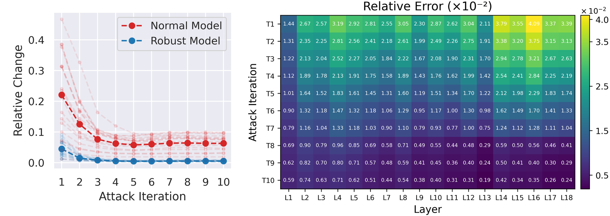

Cutting PGD iterations to fit a compute budget weakens the attack. Spiking-PGD recomputes a layer only when its input has changed enough, reuses the cached output otherwise, and keeps the gradient alive with a virtual surrogate gradient.
Abstract
This work tackles a critical challenge in AI safety research under limited compute: given a fixed computation budget, how can one maximize the strength of iterative adversarial attacks? Coarsely reducing the number of attack iterations lowers cost but substantially weakens effectiveness. To fulfill the attainable attack efficacy within a constrained budget, we propose a fine-grained control mechanism that selectively recomputes layer activations across both iteration-wise and layer-wise levels. Extensive experiments show that our method consistently outperforms existing baselines at equal cost. Moreover, when integrated into adversarial training, it attains comparable performance with only 30% of the original budget.
Animation
Each PGD step runs the input forward through all 18 layers. Spiking-PGD checks every layer as the forward pass reaches it: if its input changed by at least \(\rho\) since the last step, the layer is recomputed; otherwise the whole layer reuses its cached output \(\hat o_{t-1}\). The decision is made afresh at every iteration, so a layer that was reused can be recomputed at full precision later if its input starts moving again. Watch the iteration × layer mask fill in.
Illustrative scenario: based on the measured Fig. 1 values, with a few layers whose change rises again at later iterations, so they are reused first and then recomputed at full precision (marked ↻). Switch to Measured for the paper's ResNet-18 data, where changes decay steadily. The first iteration is always computed in full.
Measured: per-layer relative change from Fig. 1 of the paper (normal ResNet-18, CIFAR-10). The first iteration is always computed in full.
Method
Across PGD iterations, hidden activations quickly stop changing, and they settle at different rates in different layers. Adversarially trained models change even less. Recomputing every layer at every step wastes most of the budget.

Let \(\Delta\in\{0,1\}^{T\times L}\) mark whether layer \(l\) is recomputed at iteration \(t\). Early stopping is the block-structured special case of this problem, so its optimum can never beat the fine-grained one: \(V_{\text{coarse}}\le V_{\text{fine}}\).
For a linear layer, the new output equals the old output plus the layer applied to the activation residual. A gate with one threshold \(\rho\) fires only when that residual is large, and otherwise reuses \(\hat o_{t-1}\). One cheap rule replaces a search over an exponentially large mask space.
Reusing a cached output cuts the autograd graph, and the gradient to the input vanishes. We route the upstream gradient back through the layer's adjoint, \(\partial\mathcal L/\partial a_t=\mathcal A^{\top}(\partial\mathcal L/\partial\hat o)\), using conv2d_input for convolutions and a matrix product for linear layers.
Layer computed: autograd follows the chain rule.
Output reused: the gate blocks the path to \(a_t\).
Ours: route the upstream gradient through \(\mathcal A^{\top}\).
Results
Accuracy under attack against the compute the attack is allowed to spend; lower means a stronger attack. Baselines spend their budget by running fewer iterations, Spiking-PGD by reusing layers. Drag across the chart to pick a budget.
Accuracy remaining under attack. A shorter bar is a stronger attack.
Curves are read off Figs. 5 and 6 of the paper (accurate to a few tenths of a point). A few high-budget baseline points hidden behind overlapping curves in the figures are left out.
For adversarial training the threshold follows a schedule, \(\rho(t)=\rho_0\frac{e^{-\lambda t/N}-e^{-\lambda}}{1-e^{-\lambda}}\) with \(\rho_0=0.1\) and \(N=200\) epochs. Early on, ρ is large and the attack reuses almost everything, so perturbations are cheap and weak. As ρ decays, more layers are recomputed and the attack sharpens. Play the 200 epochs on CIFAR-10.
Accuracy and per-epoch attack compute are read off Figs. 7 and 8 of the paper; compute counts full-precision layer evaluations in the 10-step training attack. The mask shows a pattern with the same compute fraction, built from the Fig. 1 statistics.
Citation
@inproceedings{hou2026fine, title={Fine-Grained Iterative Adversarial Attacks with Limited Computation Budget}, author={Hou, Zhichao and Gao, Weizhi and Liu, Xiaorui}, booktitle={International Conference on Learning Representations}, volume={2026}, pages={75235--75250}, year={2026} }